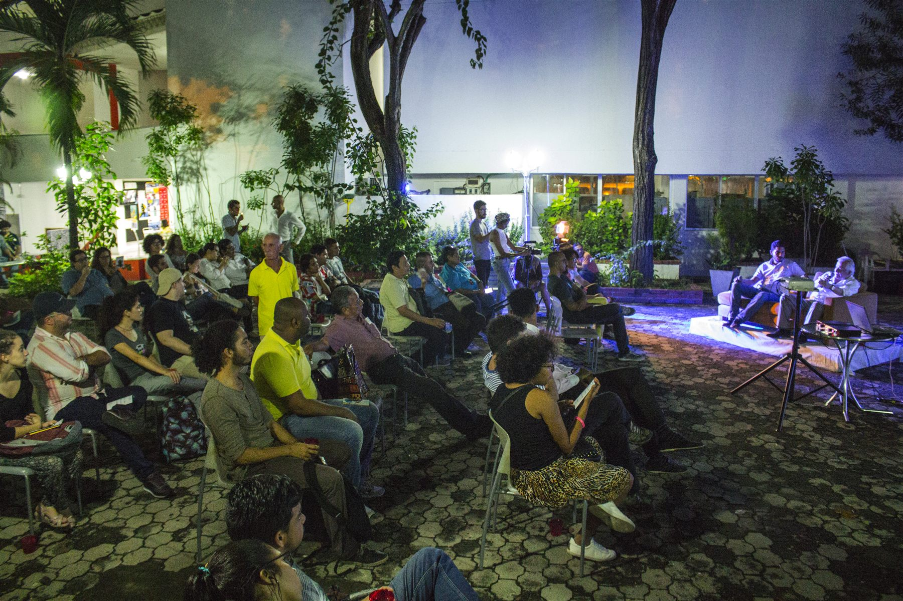

Proyecto principal · Públicos y Audiencias
Mal de Ojo Festival Internacional de Cine ↗
El proceso de Mal de Ojo comenzó en 2016. En 2024 tuvo lugar la primera edición del festival; en 2025, la segunda. La tercera edición será en diciembre de 2026 en Barranquilla.
